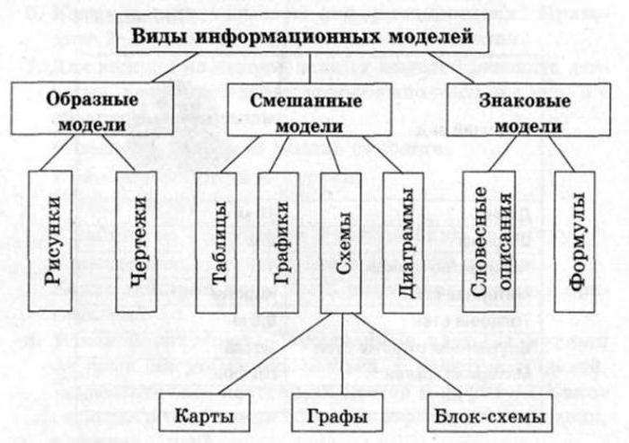
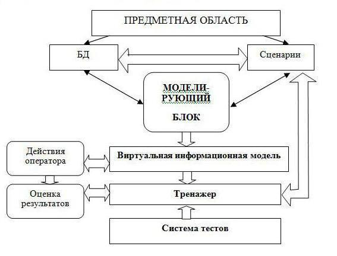

По мере развития человечества происходит структуризация и оптимизация наличных у нас данных и возможностей их использования. При этом ключевой является информационная модель. На сегодняшний день она является существенно недооценённым инструментов планирования. Чтобы сломать эту тенденцию, необходимо рассказывать аудитории о её возможностях, чем и займётся автор этой статьи.
Информационная модель — модель объекта, представленная в виде информации, описывающей существенные для данного рассмотрения параметры и переменные величины объекта, связи между ними, входы и выходы объекта и позволяющая путём подачи на модель информации об изменениях входных величин моделировать возможные состояния объекта.
Информационная модель (в широком, общенаучном смысле) — совокупность информации, характеризующая существенные свойства и состояния объекта, процесса, явления, а также взаимосвязь с внешним миром.
Типы информационных моделей
Поскольку они являются совокупностью информации, то часто характеризуют состояние и свойства объекта, явления, процесса и их взаимодействие с окружающим их миром. Зависимо от того, как они представлены и выражены, выделяют два типы информационных моделей:
Вербальные. Они создаются как результат умственной деятельности человека и представляются в словесной форме или при помощи жестикуляции.
Знаковые. Для их выражения используются рисунки, схемы, графики, формулы.
Что необходимо для их создания
Информация, причём как можно более точная. Чем больше предоставленные данные отвечают реальным показателем, тем эффективней применяется модель на практике. Чтобы разработать модель, сначала проводится сбор всей возможной информации. Она отсеивается и остаётся та, что предоставляет наибольшую ценность для исследователя. Проводится анализ предоставляющей интерес информации, на основании которого она структурируется. И зависимо от целей исследователь из отдельных блоков данных строит необходимую модель. Потом проводится поиск ошибок и ликвидация противоречий. Когда этот шаг закончен, то разработка информационной модели тоже считается завершённой.
Где применяются информационные модели
Везде. Только такое обозначение не всегда применяется на практике из-за его излишней научности. Инструкции для компьютеров, телевизоров, телефонов, использованных бутылей воды, автомобильных аккумуляторов – вот лишь отдельные примеры. Информационной моделью является и технология производства комбайнов, тракторов, самолётов, грузовиков, прицепов, строений. Как видите, для неё есть применение и в быту, и в промышленности. Но сам термин «информационная модель» больше применяется в последней сфере из-за того, что здесь протекают более сложные процессы с участием большого количества людей.
Наверх